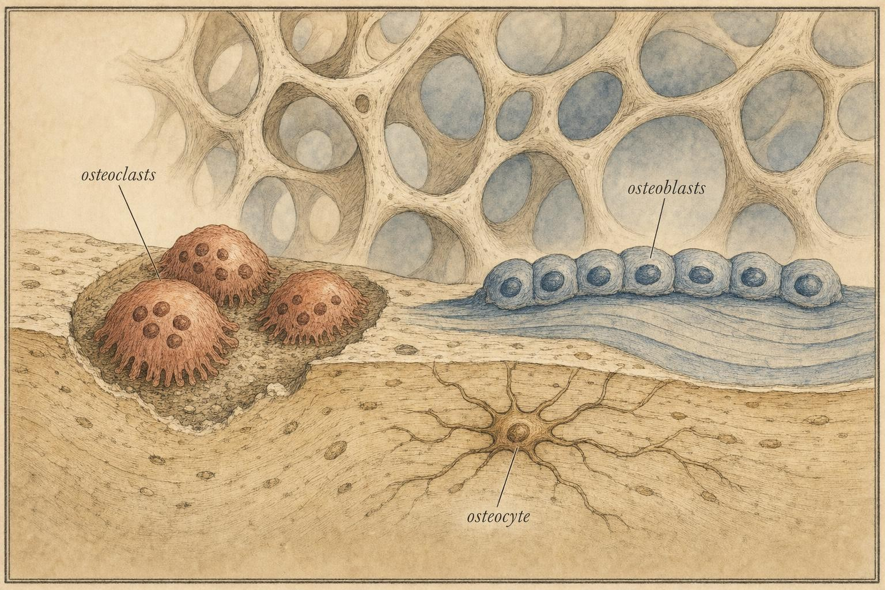
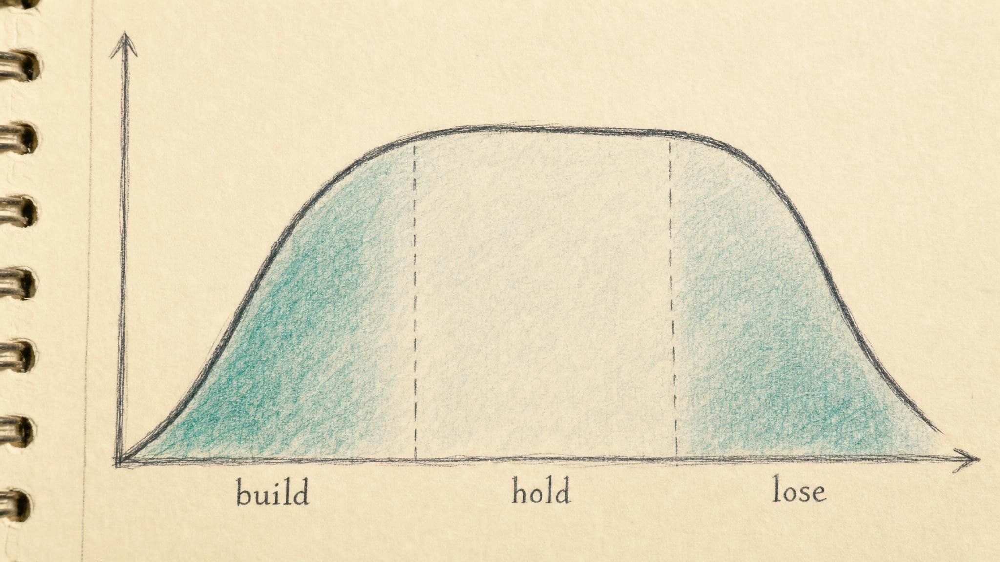

Estrogen and the Living Skeleton
Why bone health is a female physiology story, and why a quiet cycle can be a skeletal warning.
A stress fracture in the second metatarsal of a nineteen-year-old distance runner looks, on the surface, like an overuse problem. Rest it, adjust the training load, come back in six to eight weeks. But if that same runner has not had a menstrual period in eight months, the fracture is telling a second story, one about the tissue itself. Her bone may be under-built and under-defended, and the missing period and the cracked bone share a common upstream cause. To read that story correctly, you have to stop thinking of the skeleton as scaffolding and start thinking of it as an organ that is alive, hungry, and constantly rebuilding itself.
Throughout this chapter you will follow one runner, Farrah, a 19-year-old sophomore on her university's cross country team who signed up for this course after her own stress fracture forced a hard conversation with an athletic trainer. Farrah had trained through a missing period for the better part of a year, telling herself it was normal for a serious athlete, a badge of how hard she was working. She had heard other runners say the same thing. Nobody had ever connected her quiet cycle to the ache that eventually became a diagnosed fracture in her foot. Farrah is not a case to be solved in this chapter, and she is not a stand-in for every young athlete's experience. She is a thread we will return to, a concrete anchor for an abstract idea: that bone, cycle, and hormone are one continuous story, not three separate ones.
This chapter is where two earlier threads in this course, the quiet cycle of functional hypothalamic amenorrhea from Chapter 6 and the energy shortfall of relative energy deficiency in sport from Chapter 7, arrive at a destination with lifelong consequences. The link runs through a single hormone: estradiol. By the end of this chapter you will understand why a missed period in a young person is never just a reproductive footnote, and why the skeleton keeps a kind of ledger that a clinician, not a coach or an educator, is the one qualified to read.
The actionable core, first
Before the mechanism, the practice. Here is what matters most for anyone applying this material, whether you are teaching, writing, advising in a non-clinical role, or simply trying to understand your own body.
First, bone is built early and defended continuously. The window for accumulating peak bone mass, the highest amount of mineralized bone a skeleton will ever carry, closes in the late teens to late twenties, and what is not laid down then is difficult to recover later. Second, estradiol is the skeleton's primary brake on bone breakdown across the whole reproductive lifespan. When estradiol is chronically low, that brake releases. Third, a persistently absent or irregular cycle in a younger person is a plausible signal of low estrogen exposure, and therefore a plausible signal about bone, and it is a reason to encourage professional evaluation rather than to reassure, train through, or treat.
That third point is the recognize-and-refer thread of this course, seen from a new and more sobering angle. You are learning to notice a pattern, not to diagnose it. The distinction matters enormously here, because the assessment tools for bone, most notably a scan called dual-energy X-ray absorptiometry (DEXA), the interpretation of that scan, and any decisions about care belong firmly with a qualified clinician. A single measurement of bone mineral density (BMD), the amount of mineral packed into a given area of bone, tells a clinician a great deal. It should tell you, in an educational role, almost nothing beyond the fact that someone is being appropriately evaluated.
Bone is a living, self-renewing tissue
The image of the skeleton as dry, inert framework is wrong in a way that changes everything. Adult bone renews itself continuously through a process called remodeling: old bone is dissolved and removed, and new bone is manufactured to replace it, in coordinated cycles that repeat across the entire skeleton throughout life. In a landmark synthesis, Manolagas (2000) framed the adult skeleton as a tissue kept alive by the birth, work, and death of specialized cells arranged in teams, teams that assemble at a given point on a bone surface, complete their work, and then disperse, only for a new team to assemble somewhere else. At any moment, millions of these small work sites are active across a single skeleton, each one a miniature construction project with its own timeline.
Three cell types do the work. Osteoclasts are the demolition crew, large multinucleated cells that attach to bone surface and resorb it, meaning they dissolve mineral and clear away old matrix, carving out a small pit as they go. Osteoblasts are the construction crew, cells that move into the freshly cleared pit and lay down new bone matrix, an unmineralized scaffold called osteoid, which then hardens as calcium and phosphate crystals are deposited into it. A third cell, the osteocyte, is a former osteoblast that has become embedded in the bone it built, walled into the mineral it just laid down, where it lives out the rest of its long life as a sensor and a signaling hub. Osteocytes are connected to one another and to the bone surface by a dense network of tiny channels, so that a single osteocyte deep inside the bone can sense mechanical strain and relay a signal outward to the cells doing the demolition and construction on the surface. Almeida and colleagues (2017) describe this network as functioning almost like a nervous system for the skeleton, distributed, always listening, and capable of directing remodeling toward exactly the places that need it and away from the places that do not.
In a healthy young adult these three cell types are balanced. Roughly as much bone is removed by osteoclasts as is replaced by osteoblasts, so overall density holds steady even though the tissue itself is being continuously torn down and rebuilt beneath the surface. This balance is the single most useful concept in the chapter, because everything that harms bone does so by tipping it. When resorption outpaces formation, even slightly, and does so month after month, bone is lost. Manolagas (2000) and Almeida et al. (2017) both emphasize that the rate at which these cells are born and die, not just how hard any individual cell works, sets the direction of the balance. A signal that shortens the working life of osteoblasts or extends the working life of osteoclasts will tip the whole system toward loss, even if no single cell is behaving abnormally.
It is worth noting that not all bone is the same. The skeleton contains two broad architectures: dense, compact cortical bone, which forms the outer shell of most bones and dominates the shafts of long bones like the femur, and lighter, honeycombed trabecular bone, which fills the ends of long bones and makes up the bulk of vertebrae. Trabecular bone has far more surface area relative to its volume, which means it remodels faster and responds sooner, for better or worse, to hormonal change. This is not a minor technical footnote. It is part of why certain bones, the spine, the hip, the wrist, carry outsized clinical attention, and why some of the earliest microscopic evidence of bone loss under low estrogen conditions shows up in trabecular architecture before overall density has moved very far at all.
A full remodeling cycle at any one site, from the moment osteoclasts arrive to the moment newly laid matrix has finished mineralizing, takes months, commonly cited in the range of four to eight months for a single site, even though the tissue as a whole is remodeling continuously because millions of sites are staggered across different phases at once. This staggered timing matters for how you should think about any single measurement of bone. A snapshot only ever captures the net result of many overlapping cycles, some just beginning, some nearly finished, which is one reason bone changes show up slowly and are measured in months and years rather than days. It also explains why a person can feel completely well while a resorption-formation gap has already been open for the better part of a year. Nothing about early bone loss announces itself with symptoms. The first outward sign is often, as with Farrah, a fracture that occurred under a load the bone should ordinarily have withstood without difficulty.

The remodeling unit: demolition and construction crews working the same bone surface." data-image-idx="0" style="display:block;max-width:100%;max-height:75vh;height:auto;width:auto;margin:0 auto;cursor:pointer;">Estradiol restrains the demolition crew
Now bring in the hormone. Among all the signals that reach bone, estradiol, the principal estrogen of the reproductive years, is one of the most powerful, and its dominant role is protective. Khosla and Monroe (2018) summarized the mechanism cleanly: estrogen's primary effect on the skeleton is to inhibit remodeling, restraining the overall turnover rate, and it does this through several converging routes rather than a single switch.
The best characterized route runs through a signaling pair called receptor activator of nuclear factor kappa-B ligand (RANKL) and its natural decoy, osteoprotegerin (OPG). Osteoblasts and osteocytes produce RANKL, which binds a receptor called RANK on the surface of osteoclast precursor cells, and that binding is the primary trigger that turns those precursors into mature, bone-resorbing osteoclasts. Osteoprotegerin works by soaking up RANKL before it can reach RANK, acting as a decoy that blunts the demolition signal. Estrogen shifts the ratio between these two in bone's favor: it increases the production of osteoprotegerin and reduces the production of RANKL, which together mean fewer osteoclast precursors get the green light to mature and start resorbing. Almeida et al. (2017) place this RANKL-to-osteoprotegerin ratio at the center of estrogen's skeletal effect, describing it as one of the clearest molecular explanations we have for why falling estrogen so reliably accelerates bone loss.
Estrogen also acts directly on the lifespan of the cells themselves. It shortens the working life of osteoclasts by promoting their programmed cell death, called apoptosis, once they have finished a resorption cycle, and it lengthens the working life of osteoblasts by suppressing apoptosis in that cell line. The net effect touches both sides of the balance at once: less demolition capacity coming online, and more construction capacity staying online longer. Estrogen also protects osteocytes from apoptosis. Because osteocytes are the network that senses strain and orchestrates local remodeling, keeping more of them alive and functioning helps preserve the skeleton's ability to direct repair to exactly where it is needed, rather than leaving damaged microscopic regions unrepaired while remodeling proceeds elsewhere.
When estradiol is present at adequate levels, this multi-pronged brake holds. When it falls and stays low, the brake releases on several fronts simultaneously. Resorption speeds up, formation cannot keep pace, and a resorption-formation gap opens. That gap, sustained over time, is bone loss. This is the mechanistic heart of the whole chapter, and it is well established: across the research literature, estrogen is identified as the major hormonal regulator of bone metabolism, in women and, notably, in men as well, since men also produce estrogen through the conversion of testosterone and rely on it for skeletal maintenance (Khosla and Monroe, 2018; Almeida et al., 2017).
There is a further layer worth naming, because it explains why the effect of low estrogen is not limited to a simple shift in cell counts. Almeida and colleagues (2017) describe estrogen as exerting an antioxidant-like influence inside bone cells, restraining the buildup of reactive oxygen species, byproducts of normal cellular activity that accumulate faster when estrogen is scarce. That buildup activates a family of transcription factors called FoxO, which, among other effects, redirects osteoblast precursors away from becoming bone-building cells and drives osteoblasts and osteocytes further toward apoptosis. In other words, low estrogen does not just remove a brake on osteoclasts. It also creates a hostile internal environment for the very cells responsible for laying down new bone, compounding the resorption-formation gap from both directions at once. This is part of why the skeletal consequences of sustained low estrogen tend to be more severe than a simple story about one hormone and one receptor might suggest.
The lifespan arc: build, hold, then lose
Estrogen and bone play out over a lifetime in three broad acts. Understanding the arc is what turns a mechanism into a practical frame for recognizing risk at the right moments, and it is also where the idea of a bone bank becomes useful.
The bone bank, taken seriously
Think of the skeleton across a lifetime the way you might think of a long-term financial account. There is a deposit phase, a long holding phase during which the balance is defended rather than grown, and eventually a withdrawal phase. The metaphor is not decorative. It maps cleanly onto what remodeling actually does across the decades, and it clarifies why timing matters more than almost anything else in this story. A dollar deposited early compounds. A dollar not deposited during the deposit window cannot be added retroactively once that window closes. Bone works the same way. The account you carry into your fifties and sixties was, in large part, already determined by your late teens and twenties, and no amount of later effort fully substitutes for what did or did not happen during the original building phase.
Act one: the youth building window
Bone mass is not accumulated evenly across childhood. It surges in the years around puberty. The National Osteoporosis Foundation position statement, based on a systematic review by Weaver and colleagues (2016), found that the roughly four years surrounding the age of peak bone mineral accretion, the fastest phase of bone gain, capture about thirty-nine percent of total body bone mineral. Read that again: nearly two-fifths of the adult skeleton's mineral is laid down in a four-year sprint that mostly happens in the mid-teens. This is the single largest deposit the bone bank account will ever receive, and it happens on a schedule the individual does not control.
The same review graded the evidence for lifestyle factors and found grade A evidence, the strongest tier used in that framework, that calcium intake and physical activity, especially weight-bearing activity during the late childhood and peripubertal years, are critical for maximizing peak bone mineral accrual (Weaver et al., 2016). This is one of the more solid findings in the entire field, and it deserves to be stated plainly rather than hedged. It also means the deposit phase is not purely hormonal. Nutrition and mechanical loading matter enormously during these years, working alongside estrogen rather than instead of it.
The total amount of bone a person carries out of young adulthood is called peak bone mass. It is the reserve from which the rest of life draws down, the closing balance of the deposit phase. A higher peak means more margin before density falls into a range associated with fracture, decades later. Anything that suppresses estrogen or restricts the energy and nutrients available for building during this window lowers the peak, and because the window does not reopen, a lower peak is carried forward for the rest of a person's life, even if estrogen and nutrition are both later fully restored.
Act two: the reproductive years of protection
Through the reproductive decades, a regular ovulatory cycle produces the cyclical estradiol exposure that keeps the remodeling balance level and defends the peak that was built. This is the quiet, steady work of maintenance, the long holding phase of the account. Withdrawals are not supposed to happen here, or at least not net withdrawals; deposits and withdrawals should roughly cancel out, month after month, year after year. It is also, importantly, where the reproductive cycle stops being only a fertility signal and becomes a skeletal one. When the cycle is regular, bone is generally being protected. When it goes quiet for reasons other than pregnancy, that protection may be weakening, and the holding phase can quietly turn into an unplanned withdrawal phase, years or decades earlier than the skeleton was designed for.
Not every dip in estrogen during the holding phase is cause for alarm, and it is worth naming the difference so the pattern-recognition skill you are building stays calibrated rather than fearful. Pregnancy and, especially, breastfeeding both involve a temporary, physiological suppression of ovulatory cycling and estrogen, and lactation in particular is associated with measurable, if usually modest, bone density loss while it continues. This is a normal, expected withdrawal, and for most people it reverses on its own once breastfeeding ends and cycles resume, with bone density typically recovering over the following months. The distinction that matters is duration and cause. A withdrawal tied to a known, self-limited, biologically expected event is a different pattern from a withdrawal tied to an unresolved energy deficit or an unexplained absence of cycling that persists long after any obvious physiological reason has passed. Learning to tell these apart, at least well enough to know which pattern warrants a closer look, is part of what this chapter is training you to do.
Act three: the menopause transition and after
Then estradiol falls, sharply, over the few years of the menopause transition and after. Riggs, Khosla, and Melton proposed what they called a unitary model of involutional osteoporosis, arguing that estrogen deficiency is the central cause of both the early accelerated phase of bone loss right after menopause and the slower phase that continues into later life. In this framing, menopause is not one of several contributors to osteoporosis in women; it is the central driver, and the withdrawal phase of the bone bank account, once it begins, can proceed for years at a pace far faster than the slow, steady deposits of youth ever moved in the opposite direction.
The clinical importance of the transition cannot be overstated, and it is exactly where the boundary of your role is firmest. Decisions about bone density scanning, fracture risk assessment, hormone therapy, and any medication belong with a clinician. Your task, in an educational role, is to understand the arc well enough to recognize when someone's situation warrants that professional conversation, whether that person is approaching menopause or, as with Farrah, is decades away from it but has already opened an early, unplanned withdrawal.

The lifespan trajectory: a peak built early, held through the reproductive years, then drawn down." data-image-idx="1" style="display:block;max-width:100%;max-height:75vh;height:auto;width:auto;margin:0 auto;cursor:pointer;">Where the threads converge: the quiet cycle and the under-built skeleton
Now we can close the loop with Chapters 6 and 7. The chain of reasoning is direct, and each link is supported.
Start with energy. The Female Athlete Triad, defined in the American College of Sports Medicine position stand by Nattiv and colleagues (2007), describes the interrelationship among three things on a spectrum from health to disease: energy availability, meaning the energy left over for the body's functions after exercise is fueled; menstrual function; and bone mineral density. The initiating event is low energy availability. When the body does not have enough energy, it downregulates the reproductive axis, specifically the hypothalamic-pituitary-ovarian axis that governs ovulation and cyclical estrogen production, the cycle goes quiet, estrogen falls, and bone suffers. The three are not a coincidence; they are one causal cascade, and this is the cascade Chapter 6 called functional hypothalamic amenorrhea (FHA), a reversible shutdown of ovulatory cycling driven by energy deficit, excessive exercise, or psychological stress rather than by any structural disease of the reproductive organs.
The International Olympic Committee consensus statement by Mountjoy and colleagues (2014) broadened this into relative energy deficiency in sport (RED-S), a wider syndrome in which low energy availability impairs many systems at once, including metabolic rate, immunity, cardiovascular health, and bone. The relabeling matters because it recognizes that the harm extends beyond menstruation and bone, and that it affects people of any gender, but the bone consequence remains a central one, and it is the consequence with arguably the longest tail, since a bone deficit acquired at nineteen can still be measurable decades later.
The specific danger for a young person is timing. A recent review by Wong and colleagues (2025) synthesized the evidence that functional hypothalamic amenorrhea in adolescent female athletes, driven by low energy availability, excessive exercise, or psychological stress, produces low estrogen and impairs bone mineral accrual during exactly the crucial window of skeletal development, with an associated increase in fracture risk, including the kind of stress fracture that brought Farrah into this conversation in the first place. Put the pieces together: the very years when nearly two-fifths of bone mineral should be laid down (Weaver et al., 2016) are the years when a quiet cycle can prevent it from being laid down. And what is not built in that window is not easily recovered, precisely because the deposit phase of the bone bank does not reopen once it has closed.
There is direct evidence for what happens when estrogen is restored in this population, and it is worth understanding, carefully, as evidence rather than as a recommendation. In a randomized trial, Ackerman and colleagues (2019) gave oligoamenorrheic athletes, young athletes with infrequent or absent periods, either a transdermal estradiol patch, an oral contraceptive pill, or no hormone therapy for a year, alongside calcium and vitamin D for everyone, and measured bone microarchitecture with high-resolution imaging. The transdermal estrogen group showed meaningfully greater gains in trabecular bone volume and cortical thickness than either the pill group or the no-treatment group, particularly at the tibia. A companion trial by the same research group found similar advantages in areal bone mineral density measured by DEXA (Ackerman et al., 2019). These findings matter for two reasons. First, they confirm, in a controlled trial rather than only observational data, that restoring estrogen exposure changes bone outcomes in exactly the direction the mechanism predicts. Second, they show that not all estrogen delivery methods behaved identically in this trial, a nuance that belongs entirely to the clinicians who prescribe and monitor such treatment, not to an educational discussion of what any one person should do.
This is why a runner's absent period is not a badge of training discipline and not something to wait out. It is a plausible signal of a skeleton that is not being built or maintained, at the worst possible time for that to be true. Farrah's stress fracture and her missing period were never two unrelated events competing for attention. They were the same underlying signal, low estrogen exposure sustained over months, showing up in two different tissues at two different timescales: reproductive function first, because it is the more sensitive, faster-responding system, and skeletal integrity later, because bone loss takes months of sustained deficit to accumulate into something as concrete as a fracture.
It also helps to understand why the reproductive system tends to go quiet before the skeleton visibly fails, rather than the two failing together. The hypothalamus, sensing a sustained energy shortfall, treats ovulation as a dispensable, energy-costly function and suppresses the pulsatile release of gonadotropin-releasing hormone that normally drives the whole cycle forward. This is, in a narrow sense, an adaptive response: reproduction is metabolically expensive, and an organism under sustained energy stress benefits, in principle, from not investing further in it. But the same energy-conservation logic that quiets the cycle does nothing to protect the skeleton from the estrogen loss that quieting produces. Bone was never the target of the adaptation. It is a bystander that absorbs the cost. Recognizing that the missed period is an adaptive signal about energy, not a random malfunction, is part of why it deserves to be taken seriously rather than dismissed as a minor inconvenience of hard training.
Recognize and refer: what belongs to a clinician
Because this chapter deals with a tissue you cannot see or feel losing density, the recognize-and-refer skill here is less about physical signs and more about pattern recognition across time. Three patterns are worth naming plainly, not so that you can act on them clinically, but so that you can recognize when someone else's situation calls for a clinician who can.
The first pattern is a persistently absent, infrequent, or irregular cycle in a person of reproductive age who is not pregnant, especially alongside signs of low energy availability such as high training volume, restrictive eating, or unintentional weight change. The second is a stress fracture, particularly one in an unusual location, one that recurs, or one that occurs in someone whose training load does not obviously explain it. The third is any combination of the two together, which, as with Farrah, is the strongest signal of all, because it suggests the reproductive and skeletal consequences of low estrogen are showing up at the same time in the same person.
None of these three patterns is something an educational role should diagnose, quantify, or treat. What a clinician can do that an educational role cannot is order and interpret a DEXA scan, the imaging test that measures bone mineral density directly and expresses it relative to reference populations, order laboratory tests to rule out other causes of a quiet cycle, take a full history that weighs training, nutrition, and psychological stress together, and decide whether hormone therapy, nutritional rehabilitation, activity modification, or some combination is appropriate. These are precisely the decisions that require years of clinical training and the ability to examine and follow an individual person over time, which is exactly what an educational course, by design, cannot do.
It is worth understanding, in outline, what a DEXA result actually contains, not so that you can interpret one, but so that you understand why interpretation is a clinical task rather than a quick lookup. A DEXA report compares a person's bone mineral density against a reference population and expresses the difference as a standard score. For a person well past menopause, that comparison is typically made against young, healthy adults, a score clinicians call a T-score. For a younger, premenopausal person, the more appropriate comparison is against others of the same age and sex, a score called a Z-score, because comparing a twenty-year-old against a reference built from healthy twenty-year-olds is a meaningfully different question than comparing her against the peak bone mass of someone decades older. This distinction alone shows why the same raw scan can mean different things depending on who is being scanned and which reference a clinician chooses, which is exactly the kind of judgment call that belongs to training and context you do not have in an educational role. Naming that a scan exists and what it broadly measures is education. Reading one is not.
Grading the evidence honestly
This course commits to distinguishing what is well established from what is not, and bone is a good place to practice that discipline, because the estrogen-bone relationship is unusually solid compared with much of the cycle-based training and nutrition advice circulating today.
Well established. That estrogen restrains bone remodeling through the RANKL and osteoprotegerin pathway and through cell survival effects, and that its deficiency drives bone loss, is supported by convergent mechanistic and clinical evidence across decades (Manolagas, 2000; Khosla and Monroe, 2018; Almeida et al., 2017). That the peripubertal years are decisive for peak bone mass, and that calcium and physical activity in those years matter, carries the strongest evidence grade in the field (Weaver et al., 2016). That low energy availability is the initiating driver of the Triad and of relative energy deficiency in sport, with bone as a downstream consequence, is the consensus position of major sports medicine bodies (Nattiv et al., 2007; Mountjoy et al., 2014). And that restoring estrogen, specifically through transdermal delivery, can measurably improve bone microarchitecture and density in oligoamenorrheic athletes is supported by randomized controlled trial evidence, not only observational association (Ackerman et al., 2019).
Less certain, and worth flagging. Precisely how much peak bone mass an individual can gain from a specific intervention, how completely bone deficits from a period of amenorrhea can be recovered after energy status and cycles are restored, and the exact fracture risk carried by any one person are all harder to state with confidence. Recovery of bone after prolonged amenorrhea in youth appears to be incomplete in at least some cases, which is precisely why prevention and early recognition matter more than the hope of later repair. And a great deal of popular guidance that claims to tailor training or eating to cycle phases for bone or performance benefit rests on weak, small, or contradictory studies. Where the data are thin, say so, and do not let a strong finding about estrogen and bone lend false authority to unrelated claims.
A note of humility belongs here. This chapter distills a research literature; it does not replace the judgment of clinicians who assess and treat bone, nor the lived and professional expertise of women and the practitioners who work with them. The strength of the estrogen-bone relationship is a reason to take the recognize-and-refer thread seriously, not a license to act beyond an educational role.
The adult skeleton is not a finished structure but a tissue in perpetual renewal, and its fate is written in the balance between the cells that tear it down and the cells that build it back.
Manolagas, S. C., Endocrine Reviews (2000)
Holding the clinical boundary
Because the stakes are real, the boundary must be clear. Recognizing a pattern is educational. Assessing, diagnosing, and treating are clinical. The line is especially firm here around anything touching amenorrhea, hormonal contraception, and the postpartum period, all of which alter estrogen exposure in ways that interact with bone and require individualized clinical judgment.
What is within an educational role: understanding remodeling and estrogen's part in it, understanding the lifespan arc and the bone bank it describes, and being able to notice when a persistently quiet cycle, especially alongside signs of low energy availability or a stress fracture, is a reason to encourage someone to seek evaluation. What is not within it: interpreting a bone density scan, deciding whether hormone therapy or contraception is appropriate, prescribing training or nutrition as treatment, or offering reassurance that a missed-period pattern is harmless. When in doubt, the safe move is always the same: name what you notice, without alarm and without diagnosis, and point toward qualified care.
Farrah's story, as far as this chapter is concerned, ends the same way every real story like hers should: with a referral, not a verdict. Her athletic trainer connected the fracture and the missing period, said so plainly, and got her to a sports medicine physician, who ordered the appropriate evaluation. What that evaluation found, and what was done about it, belongs to Farrah and her care team. What belongs to this course is the mechanism that made her trainer's instinct correct, and the hope that you now share that instinct.
Key Takeaways
- Bone is living tissue in constant remodeling, with osteoclasts dissolving old bone and osteoblasts building new bone, coordinated by an embedded network of osteocytes; density is set by the balance between them.
- Estradiol's dominant role is to restrain breakdown, chiefly by shifting the RANKL to osteoprotegerin ratio and by extending osteoblast survival while shortening osteoclast survival; when estradiol falls and stays low, a resorption-formation gap opens and bone is lost.
- Nearly two-fifths of adult bone mineral is accumulated in the roughly four years around peak accretion in the mid-teens, and this youth building window, the largest deposit the bone bank ever receives, does not reopen.
- Low energy availability initiates a cascade of quiet cycle, low estrogen, and impaired bone, described by the Female Athlete Triad and relative energy deficiency in sport frameworks, and formally named functional hypothalamic amenorrhea when it silences the cycle.
- In adolescents, amenorrhea can prevent bone from being built during the very window it should be built fastest, raising fracture risk and leaving deficits that may not fully recover.
- Randomized trial evidence shows that restoring estrogen, particularly transdermal estradiol, can measurably improve bone density and microarchitecture in young athletes with amenorrhea, but the decision to pursue that treatment belongs entirely to a clinician.
- Recognize the pattern, especially a persistently quiet cycle or a stress fracture in a younger person, and refer; do not assess, diagnose, or treat.
If falling estrogen is the central driver of bone loss, whether at menopause or during a much younger episode of amenorrhea, it is also the hinge of a much broader transition. In the next chapter we turn from the skeleton to the muscles and the plate, asking what the evidence actually says, and does not say, about matching training and nutrition to the cycle.
References
Ackerman, K. E., Singhal, V., Baskaran, C., Slattery, M., Campoverde Reyes, K. J., Toth, A., Eddy, K. T., Bouxsein, M. L., Lee, H., Klibanski, A., & Misra, M. (2019). Oestrogen replacement improves bone mineral density in oligo-amenorrhoeic athletes: a randomised clinical trial. British Journal of Sports Medicine, 53(4), 229-236. https://doi.org/10.1136/bjsports-2018-099723
Ackerman, K. E., Singhal, V., Slattery, M., Eddy, K. T., Bouxsein, M. L., Lee, H., Klibanski, A., & Misra, M. (2019). Effects of estrogen replacement on bone geometry and microarchitecture in adolescent and young adult oligoamenorrheic athletes: A randomized trial. Journal of Bone and Mineral Research, 35(2), 248-260. https://doi.org/10.1002/jbmr.3887
Almeida, M., Laurent, M. R., Dubois, V., Claessens, F., O'Brien, C. A., Bouillon, R., Vanderschueren, D., & Manolagas, S. C. (2017). Estrogens and androgens in skeletal physiology and pathophysiology. Physiological Reviews, 97(1), 135-187. https://doi.org/10.1152/physrev.00033.2015
Khosla, S., & Monroe, D. G. (2018). Regulation of bone metabolism by sex steroids. Cold Spring Harbor Perspectives in Medicine, 8(1), a031211. https://doi.org/10.1101/cshperspect.a031211
Manolagas, S. C. (2000). Birth and death of bone cells: Basic regulatory mechanisms and implications for the pathogenesis and treatment of osteoporosis. Endocrine Reviews, 21(2), 115-137. https://doi.org/10.1210/edrv.21.2.0395
Mountjoy, M., Sundgot-Borgen, J., Burke, L., Carter, S., Constantini, N., Lebrun, C., Meyer, N., Sherman, R., Steffen, K., Budgett, R., & Ljungqvist, A. (2014). The IOC consensus statement: Beyond the Female Athlete Triad, Relative Energy Deficiency in Sport (RED-S). British Journal of Sports Medicine, 48(7), 491-497. https://doi.org/10.1136/bjsports-2014-093502
Nattiv, A., Loucks, A. B., Manore, M. M., Sanborn, C. F., Sundgot-Borgen, J., & Warren, M. P. (2007). The female athlete triad. Medicine & Science in Sports & Exercise, 39(10), 1867-1882. https://doi.org/10.1249/mss.0b013e318149f111
Weaver, C. M., Gordon, C. M., Janz, K. F., Kalkwarf, H. J., Lappe, J. M., Lewis, R., O'Karma, M., Wallace, T. C., & Zemel, B. S. (2016). The National Osteoporosis Foundation's position statement on peak bone mass development and lifestyle factors: A systematic review and implementation recommendations. Osteoporosis International, 27(4), 1281-1386. https://doi.org/10.1007/s00198-015-3440-3
Wong, L., Leibner, L., Vicioso, C., Shah, B., & Ranade, S. C. (2025). Functional hypothalamic amenorrhea in adolescent athletes impairs bone accrual and increases fracture risk. Frontiers in Endocrinology, 16, 1709695. https://doi.org/10.3389/fendo.2025.1709695